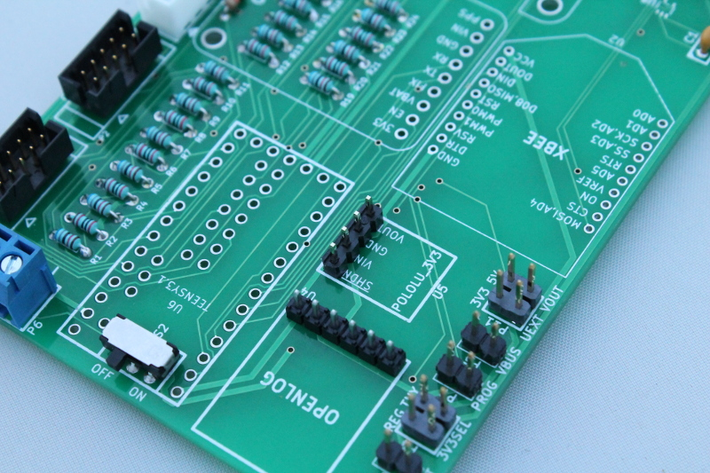

6) OpenLOG and 3V3 Headers¶
Take the same breakaway header from the previous step and break off a 6-position and a 4-position header. Solder these into positions U4 and U5 as shown in the image below. Solder with the shorter pin side facing up.
These pin headers will be used to connect the OpenLog SD card data logger and Pololu 3V3 optional power regulator later in the instructions.
